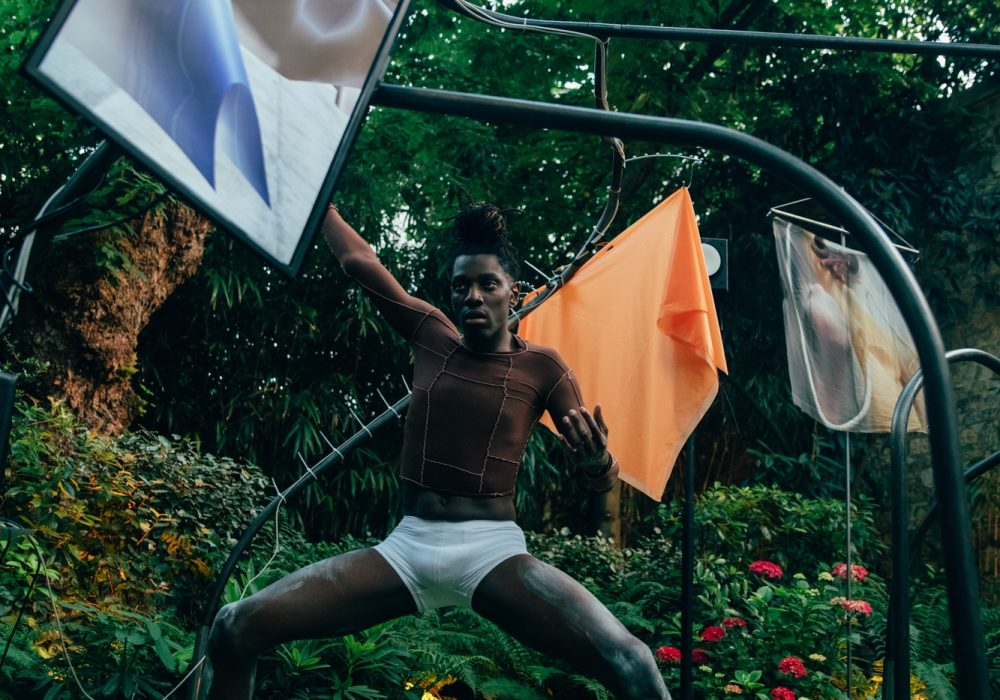

ACTIVITÉ DU CLUB • PERFORMANCE

Après treize ans d’intense activité, le 7.5 Paris s'affirme aujourd'hui comme un véritable espace pluridisciplinaire croisant les arts plastiques et la pensée contemporaine.
« Ce n’est pas une galerie. Proche d’un salon contemporain ou d’un petit centre d’art, mais s’en distinguant toutefois. Tentez de le définir et il vous échappe, tant les formes qui s’y font et défont quotidiennement sortent des habituels cloisonnements du monde de l’art. »
Telle une onde radio l'énergie se diffuse, 7.5 comme hybridation expérimentale.


Association artistique et philosophique qui soutient celles et ceux qui s’engagent. Accédez à tous les vernissages privés, résidences et rencontres.